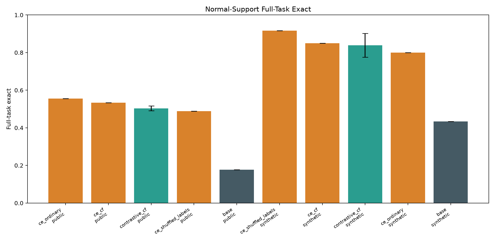
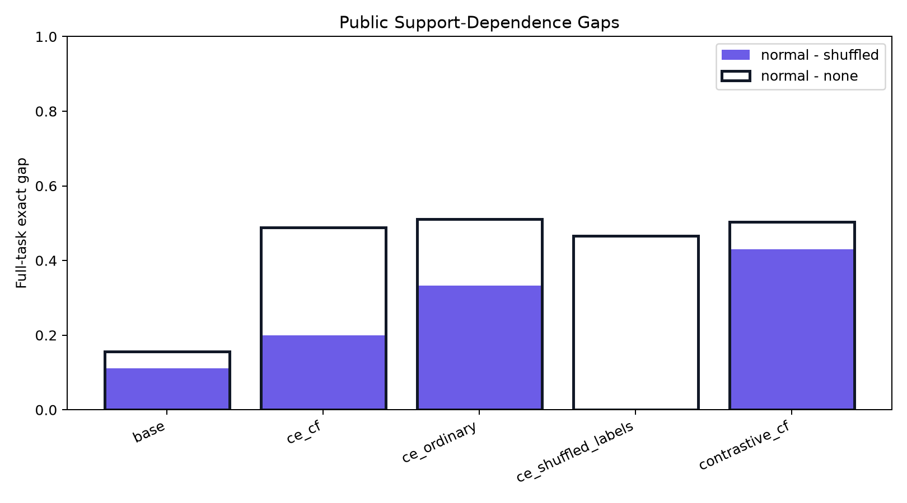
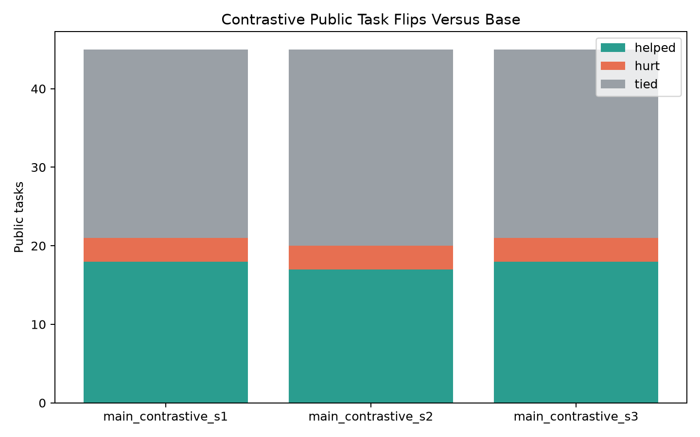
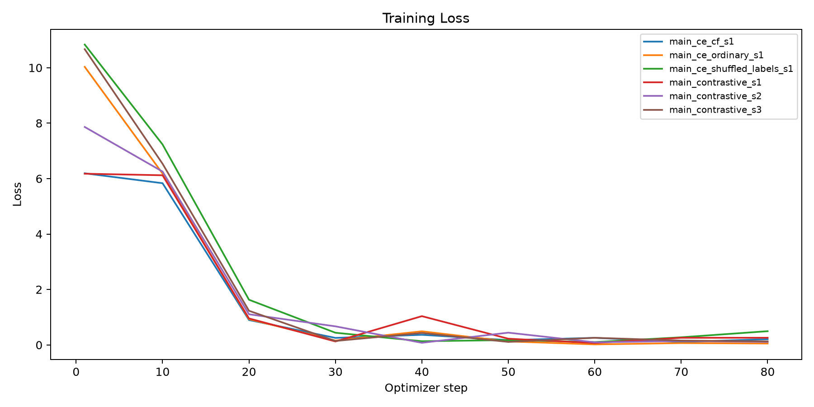

Can a support-contrastive LoRA objective make Qwen3-4B answer public text-transformation tasks better while making the answer depend more strongly on intact support examples?
The contrastive arm trains on synthetic few-shot transformations. For each target answer, the positive prompt contains intact support examples, while negative prompts contain shuffled support labels, no support examples, or a counterfactual support set from an incompatible rule. Public benchmark labels are used only for evaluation.
17.8%; contrastive arm 50.4% with seed spread 1.3%.50.4%, shuffled 7.4%, no support 0.0%.53.3%.55.6%.48.9%.| arm | split | support_mode | runs | tasks | rows | row_exact_mean | row_exact_std | full_task_exact_mean | full_task_exact_std |
|---|---|---|---|---|---|---|---|---|---|
| base | public_prose | none | 1 | 45 | 135 | 5.9% | 0.0% | 2.2% | 0.0% |
| base | public_prose | normal | 1 | 45 | 135 | 36.3% | 0.0% | 17.8% | 0.0% |
| base | public_prose | shuffled | 1 | 45 | 135 | 14.1% | 0.0% | 6.7% | 0.0% |
| ce_cf | public_prose | none | 1 | 45 | 135 | 8.9% | 0.0% | 4.4% | 0.0% |
| ce_cf | public_prose | normal | 1 | 45 | 135 | 68.1% | 0.0% | 53.3% | 0.0% |
| ce_cf | public_prose | shuffled | 1 | 45 | 135 | 51.1% | 0.0% | 33.3% | 0.0% |
| ce_ordinary | public_prose | none | 1 | 45 | 135 | 7.4% | 0.0% | 4.4% | 0.0% |
| ce_ordinary | public_prose | normal | 1 | 45 | 135 | 71.9% | 0.0% | 55.6% | 0.0% |
| ce_ordinary | public_prose | shuffled | 1 | 45 | 135 | 43.0% | 0.0% | 22.2% | 0.0% |
| ce_shuffled_labels | public_prose | none | 1 | 45 | 135 | 8.1% | 0.0% | 2.2% | 0.0% |
| ce_shuffled_labels | public_prose | normal | 1 | 45 | 135 | 68.9% | 0.0% | 48.9% | 0.0% |
| ce_shuffled_labels | public_prose | shuffled | 1 | 45 | 135 | 63.0% | 0.0% | 48.9% | 0.0% |
| contrastive_cf | public_prose | none | 3 | 45 | 135 | 0.0% | 0.0% | 0.0% | 0.0% |
| contrastive_cf | public_prose | normal | 3 | 45 | 135 | 67.4% | 2.0% | 50.4% | 1.3% |
| contrastive_cf | public_prose | shuffled | 3 | 45 | 135 | 12.6% | 1.3% | 7.4% | 1.3% |
| base | synthetic_counterfactual | contrast | 1 | 60 | 120 | 0.0% | 0.0% | 0.0% | 0.0% |
| base | synthetic_counterfactual | none | 1 | 60 | 120 | 5.8% | 0.0% | 1.7% | 0.0% |
| base | synthetic_counterfactual | normal | 1 | 60 | 120 | 56.7% | 0.0% | 43.3% | 0.0% |
| base | synthetic_counterfactual | shuffled | 1 | 60 | 120 | 25.0% | 0.0% | 21.7% | 0.0% |
| ce_cf | synthetic_counterfactual | contrast | 1 | 60 | 120 | 0.0% | 0.0% | 0.0% | 0.0% |
| ce_cf | synthetic_counterfactual | none | 1 | 60 | 120 | 1.7% | 0.0% | 0.0% | 0.0% |
| ce_cf | synthetic_counterfactual | normal | 1 | 60 | 120 | 92.5% | 0.0% | 85.0% | 0.0% |
| ce_cf | synthetic_counterfactual | shuffled | 1 | 60 | 120 | 59.2% | 0.0% | 46.7% | 0.0% |
| ce_ordinary | synthetic_counterfactual | contrast | 1 | 60 | 120 | 0.0% | 0.0% | 0.0% | 0.0% |
| ce_ordinary | synthetic_counterfactual | none | 1 | 60 | 120 | 0.8% | 0.0% | 0.0% | 0.0% |
| ce_ordinary | synthetic_counterfactual | normal | 1 | 60 | 120 | 88.3% | 0.0% | 80.0% | 0.0% |
| ce_ordinary | synthetic_counterfactual | shuffled | 1 | 60 | 120 | 47.5% | 0.0% | 36.7% | 0.0% |
| ce_shuffled_labels | synthetic_counterfactual | contrast | 1 | 60 | 120 | 0.0% | 0.0% | 0.0% | 0.0% |
| ce_shuffled_labels | synthetic_counterfactual | none | 1 | 60 | 120 | 5.0% | 0.0% | 1.7% | 0.0% |
| ce_shuffled_labels | synthetic_counterfactual | normal | 1 | 60 | 120 | 95.8% | 0.0% | 91.7% | 0.0% |
| ce_shuffled_labels | synthetic_counterfactual | shuffled | 1 | 60 | 120 | 90.8% | 0.0% | 83.3% | 0.0% |
| contrastive_cf | synthetic_counterfactual | contrast | 3 | 60 | 120 | 0.0% | 0.0% | 0.0% | 0.0% |
| contrastive_cf | synthetic_counterfactual | none | 3 | 60 | 120 | 0.0% | 0.0% | 0.0% | 0.0% |
| contrastive_cf | synthetic_counterfactual | normal | 3 | 60 | 120 | 89.7% | 3.8% | 83.9% | 6.3% |
| contrastive_cf | synthetic_counterfactual | shuffled | 3 | 60 | 120 | 8.9% | 1.7% | 6.7% | 0.0% |
| arm | split | normal | shuffled | none | contrast | normal_minus_shuffled_gap | normal_minus_none_gap | normal_minus_contrast_gap |
|---|---|---|---|---|---|---|---|---|
| base | public_prose | 17.8% | 6.7% | 2.2% | 11.1% | 15.6% | ||
| ce_cf | public_prose | 53.3% | 33.3% | 4.4% | 20.0% | 48.9% | ||
| ce_ordinary | public_prose | 55.6% | 22.2% | 4.4% | 33.3% | 51.1% | ||
| ce_shuffled_labels | public_prose | 48.9% | 48.9% | 2.2% | 0.0% | 46.7% | ||
| contrastive_cf | public_prose | 50.4% | 7.4% | 0.0% | 43.0% | 50.4% | ||
| base | synthetic_counterfactual | 43.3% | 21.7% | 1.7% | 0.0% | 21.7% | 41.7% | 43.3% |
| ce_cf | synthetic_counterfactual | 85.0% | 46.7% | 0.0% | 0.0% | 38.3% | 85.0% | 85.0% |
| ce_ordinary | synthetic_counterfactual | 80.0% | 36.7% | 0.0% | 0.0% | 43.3% | 80.0% | 80.0% |
| ce_shuffled_labels | synthetic_counterfactual | 91.7% | 83.3% | 1.7% | 0.0% | 8.3% | 90.0% | 91.7% |
| contrastive_cf | synthetic_counterfactual | 83.9% | 6.7% | 0.0% | 0.0% | 77.2% | 83.9% | 83.9% |
| run_name | seed | arm | split | tasks | rows | row_exact | full_task_exact |
|---|---|---|---|---|---|---|---|
| main_contrastive_s1 | 20260628 | base | public_prose | 45 | 135 | 36.3% | 17.8% |
| main_contrastive_s1 | 20260628 | base | synthetic_counterfactual | 60 | 120 | 56.7% | 43.3% |
| main_ce_cf_s1 | 20260628 | ce_cf | public_prose | 45 | 135 | 68.1% | 53.3% |
| main_ce_cf_s1 | 20260628 | ce_cf | synthetic_counterfactual | 60 | 120 | 92.5% | 85.0% |
| main_ce_ordinary_s1 | 20260628 | ce_ordinary | public_prose | 45 | 135 | 71.9% | 55.6% |
| main_ce_ordinary_s1 | 20260628 | ce_ordinary | synthetic_counterfactual | 60 | 120 | 88.3% | 80.0% |
| main_ce_shuffled_labels_s1 | 20260628 | ce_shuffled_labels | public_prose | 45 | 135 | 68.9% | 48.9% |
| main_ce_shuffled_labels_s1 | 20260628 | ce_shuffled_labels | synthetic_counterfactual | 60 | 120 | 95.8% | 91.7% |
| main_contrastive_s1 | 20260628 | contrastive_cf | public_prose | 45 | 135 | 66.7% | 51.1% |
| main_contrastive_s1 | 20260628 | contrastive_cf | synthetic_counterfactual | 60 | 120 | 93.3% | 88.3% |
| main_contrastive_s2 | 20260629 | contrastive_cf | public_prose | 45 | 135 | 65.9% | 48.9% |
| main_contrastive_s2 | 20260629 | contrastive_cf | synthetic_counterfactual | 60 | 120 | 90.0% | 86.7% |
| main_contrastive_s3 | 20260630 | contrastive_cf | public_prose | 45 | 135 | 69.6% | 51.1% |
| main_contrastive_s3 | 20260630 | contrastive_cf | synthetic_counterfactual | 60 | 120 | 85.8% | 76.7% |
The support-contrastive arm improves public strict task consistency over the frozen base model. The contrastive arm is strongly support-sensitive at evaluation time. A CE-only control beats the support-contrastive arm, so this objective is not the current best recipe.




| run_name | seed | helped | hurt | tied | tasks |
|---|---|---|---|---|---|
| main_contrastive_s1 | 20260628 | 18 | 3 | 24 | 45 |
| main_contrastive_s2 | 20260629 | 17 | 3 | 25 | 45 |
| main_contrastive_s3 | 20260630 | 18 | 3 | 24 | 45 |
| family | tasks_base | tasks_contrastive_cf | row_exact_base | row_exact_contrastive_cf | full_task_exact_base | full_task_exact_contrastive_cf | delta |
|---|---|---|---|---|---|---|---|
| ShippingCode | 1 | 1 | 0.0% | 100.0% | 0.0% | 100.0% | 100.0% |
| Log | 2 | 2 | 0.0% | 100.0% | 0.0% | 100.0% | 100.0% |
| Name | 3 | 3 | 33.3% | 92.6% | 0.0% | 77.8% | 77.8% |
| 4 | 4 | 66.7% | 80.6% | 25.0% | 66.7% | 41.7% | |
| DateTime | 16 | 16 | 27.1% | 59.0% | 6.2% | 39.6% | 33.3% |
| Number | 12 | 12 | 33.3% | 68.5% | 25.0% | 47.2% | 22.2% |
| Phone | 4 | 4 | 58.3% | 50.0% | 25.0% | 41.7% | 16.7% |
| BillingCode | 1 | 1 | 0.0% | 0.0% | 0.0% | 0.0% | 0.0% |
| ZipCode | 1 | 1 | 100.0% | 100.0% | 100.0% | 100.0% | 0.0% |
| Address | 1 | 1 | 100.0% | 66.7% | 100.0% | 0.0% | -100.0% |
| run_name | task_id | family | input | target | prediction |
|---|---|---|---|---|---|
| main_contrastive_s1 | Address.000013 | Address | One Main Parkway, Allentown, ND 41230 | nan | 1 |
| main_contrastive_s1 | BillingCode.000001 | BillingCode | [CPT-115] | [CPT-115]] | [CPT-115] |
| main_contrastive_s1 | BillingCode.000001 | BillingCode | [CPT-1153622] | [CPT-1153622]] | [CPT-1153622] |
| main_contrastive_s1 | BillingCode.000001 | BillingCode | [CPT-00340] | [CPT-00340]] | [CPT-00340] |
| main_contrastive_s1 | DateTime.000014 | DateTime | 1 Feb 2013 | Friday #1 February 2013 | Saturday #1 February 2013 |
| main_contrastive_s1 | DateTime.000014 | DateTime | 12 Dec 2002 | Thursday #2 December 2002 | Thursday #3 December 2002 |
| main_contrastive_s1 | DateTime.000014 | DateTime | 01 Sep 2012 | Saturday #1 September 2012 | Thursday #1 September 2012 |
| main_contrastive_s1 | DateTime.000027 | DateTime | 3302241 | Q1 '2241 | Q4 '241 |
| main_contrastive_s1 | DateTime.000027 | DateTime | 8022160 | Q3 '2160 | Q2 '2160 |
| main_contrastive_s1 | DateTime.000028 | DateTime | 11 May 2215 | W19 | W17 |
| main_contrastive_s1 | DateTime.000028 | DateTime | Oct 17 1892 | W42 | W07 |
| main_contrastive_s1 | DateTime.000028 | DateTime | Tue wk 42 in 2222 | W42 | 18-Oct-2222 |
| main_contrastive_s1 | DateTime.000030 | DateTime | 03302241 | Tuesday, March 30, 2241 | Monday, March 30, 2241 |
| main_contrastive_s1 | DateTime.000030 | DateTime | 02-Aug-2160 | Saturday, August 2, 2160 | Monday, August 2, 2160 |
| main_contrastive_s1 | DateTime.000030 | DateTime | 23 May 1984 | Wednesday, May 23, 1984 | Monday, May 23, 1984 |
| main_contrastive_s1 | DateTime.000073 | DateTime | 10:24PM | 10:00PM-10:30PM | 10:15PM-10:45PM |
| main_contrastive_s1 | DateTime.000082 | DateTime | 1953-04-22 23:34:17 | 1953-04-22 23:30 | 1953-04-22 23:25 |
| main_contrastive_s1 | DateTime.000082 | DateTime | 1868-06-22 19:36:20 | 1868-06-22 19:30 | 1868-06-22 19:25 |
| main_contrastive_s1 | DateTime.000088 | DateTime | 16:15:08 | 4:00PM | 3:00PM |
| main_contrastive_s1 | DateTime.000088 | DateTime | 22:24:59 | 10:00PM | 9:00PM |
| main_contrastive_s1 | DateTime.000096 | DateTime | 8/7/2237 | 8 | 2237 |
| main_contrastive_s1 | DateTime.000096 | DateTime | 6.30.2220 | 30 | 2220 |
| main_contrastive_s1 | DateTime.000114 | DateTime | 16-Aug-1985 01:11:56 | 0-15 | 30-45 |
| main_contrastive_s1 | Email.000009 | blanditiis ratione @ contososuites.com porro dolorum corrupti | nan | contososuites.com | |
| main_contrastive_s1 | Email.000009 | repellat deleniti @ northwindtraders.com consequatur aut qui porro | nan | northwindtraders.com | |
| main_contrastive_s1 | Name.000024 | Name | Milica Zujovic | m.z. | m.z |
| main_contrastive_s1 | Number.000005 | Number | 47641887866 | 7866 | 8786 |
| main_contrastive_s1 | Number.000005 | Number | 88081682946 | 2946 | 8294 |
| main_contrastive_s1 | Number.000008 | Number | -13578 | -135.78 | -13.578 |
| main_contrastive_s1 | Number.000008 | Number | -1961.1180 | -19.611180 | -19.61118 |
| main_contrastive_s1 | Number.000015 | Number | -22630 | -22600 | -22550 |
| main_contrastive_s1 | Number.000052 | Number | 124 | 125 | 126 |
| main_contrastive_s1 | Number.000052 | Number | 605 | 605 | 607 |
| main_contrastive_s1 | Number.000052 | Number | 842 | 840 | 844 |
| main_contrastive_s1 | Number.000056 | Number | 13.24 | 13.24 | 3.24 |
| main_contrastive_s1 | Number.000056 | Number | 200.0 | 200.0 | 0.0 |
| main_contrastive_s1 | Number.000056 | Number | 4.62 | 4.62 | 62 |
| main_contrastive_s1 | Number.000060 | Number | +43 | +0043 | +043 |
| main_contrastive_s1 | Number.000061 | Number | 1.252 | 8.2 | 1.3 * 8.2 |
| main_contrastive_s1 | Phone.000009 | Phone | 247-641-8878 | 247-641-8878 | 425-247-6418 |
| main_contrastive_s1 | Phone.000009 | Phone | 880-816-8294 | 880-816-8294 | 425-880-8168 |
| main_contrastive_s1 | Phone.000009 | Phone | (177) 191 4536 | 177-191-4536 | 425-177-1914536 |
| main_contrastive_s1 | Phone.000012 | Phone | 247-641-8878 | 425-641-8878 | 425-247-6418878 |
| main_contrastive_s1 | Phone.000012 | Phone | 880-816-8294 | 425-816-8294 | 425-880-8168294 |
| main_contrastive_s1 | Phone.000012 | Phone | (177) 191 4536 | 177-191-4536 | 425-177-1914536 |
| main_contrastive_s2 | Address.000013 | Address | One Main Parkway, Allentown, ND 41230 | nan | One |
| main_contrastive_s2 | BillingCode.000001 | BillingCode | [CPT-115] | [CPT-115]] | [CPT-115] |
| main_contrastive_s2 | BillingCode.000001 | BillingCode | [CPT-1153622] | [CPT-1153622]] | [CPT-1153622] |
| main_contrastive_s2 | BillingCode.000001 | BillingCode | [CPT-00340] | [CPT-00340]] | [CPT-00340] |
| main_contrastive_s2 | DateTime.000014 | DateTime | 1 Feb 2013 | Friday #1 February 2013 | Saturday #2 February 2013 |
| main_contrastive_s2 | DateTime.000014 | DateTime | 12 Dec 2002 | Thursday #2 December 2002 | Thursday #3 December 2002 |
| main_contrastive_s2 | DateTime.000014 | DateTime | 01 Sep 2012 | Saturday #1 September 2012 | Tuesday #1 September 2012 |
| main_contrastive_s2 | DateTime.000018 | DateTime | 02-Aug-2160 | 2 Aug 2160 | 02 Aug 2160 |
| main_contrastive_s2 | DateTime.000027 | DateTime | 3302241 | Q1 '2241 | Q1 '241 |
| main_contrastive_s2 | DateTime.000027 | DateTime | 8022160 | Q3 '2160 | Q2 '160 |
| main_contrastive_s2 | DateTime.000028 | DateTime | 11 May 2215 | W19 | W37 |
| main_contrastive_s2 | DateTime.000028 | DateTime | Oct 17 1892 | W42 | W03 |
| main_contrastive_s2 | DateTime.000028 | DateTime | Tue wk 42 in 2222 | W42 | W04 |
| main_contrastive_s2 | DateTime.000030 | DateTime | 03302241 | Tuesday, March 30, 2241 | Monday, March 30, 2241 |
| main_contrastive_s2 | DateTime.000030 | DateTime | 02-Aug-2160 | Saturday, August 2, 2160 | Monday, August 2, 2160 |
/workspace/experiments/qwen_support_contrastive_meta_icl/workspace/large_artifacts/qwen_support_contrastive_meta_icl/workspace/experiments/qwen_support_contrastive_meta_icl/runs/workspace/large_artifacts/qwen_support_contrastive_meta_icl/checkpoints/workspace/experiments/qwen_support_contrastive_meta_icl/analysis/aggregate_summary.csv/workspace/experiments/qwen_support_contrastive_meta_icl/analysis/aggregate_task_metrics.csv/workspace/experiments/qwen_support_contrastive_meta_icl/analysis/aggregate_row_predictions.csvThe public evaluation is capped for runtime. Exact-match scoring is strict. The main contrastive arm is multiseed; CE controls may be single-seed depending on the completed run matrix. The synthetic task generator covers a limited set of text transformations.